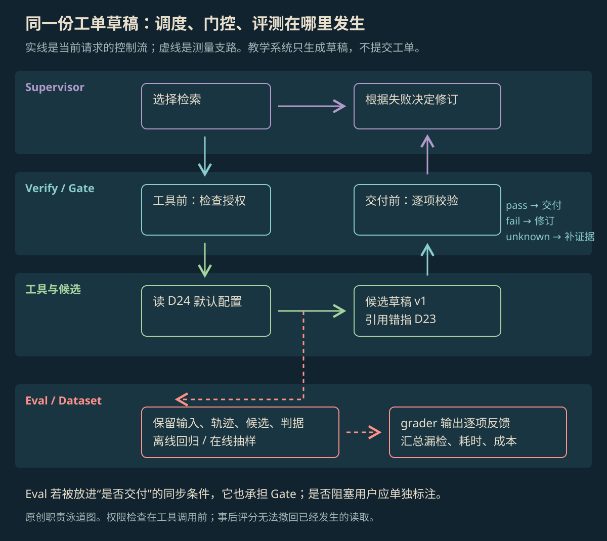
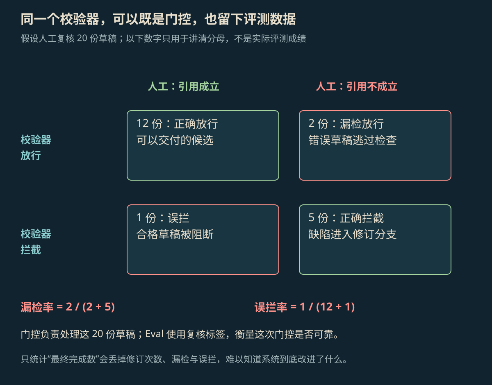

SUPERVISOR · VERIFY · EVAL
Supervisor、Verify 与 Eval：职责、机制与对比
Supervisor 选择下一步，Verify 检查当前对象，Eval 按判据形成可比较的反馈。理解三者的输入输出、在线协同、护栏位置，以及漏检与误拦的统计分母。
本页目录
三个职责的输入与输出#
Supervisor、Verify 与 Eval 分别描述调度、验证与评测三种职责。Supervisor 根据任务状态选择后续动作；Verify 判断某个输入、动作或候选是否满足指定条件；Eval 使用判据对一次或一组运行产生反馈，以衡量表现和比较版本。三者可以由同一程序组合实现，也可以分开部署，并不要求三个模型。
| 职责 | 主要输入 | 主要输出 | 结果怎样生效 |
|---|---|---|---|
| Supervisor | 目标、状态、候选动作、预算 | 下一节点或动作、停止或移交决定 | 控制执行路径 |
| Verify | 被检查对象、规则、必要证据 | 通过／失败／未知及原因 | 由控制策略选择阻断、修订或继续 |
| Eval | 任务、运行结果或轨迹、评分判据 | 分项反馈、错误分类与汇总指标 | 支持分析、回归比较，也可供在线控制使用 |
区别在于职责，不是单纯的运行时机。Eval 可离线、在线或异步执行；若评分结果参与当前请求的放行，它也承担 Gate 的控制职责。Verify 也不只发生在最终答案之后：访问前、工具调用前和输出前，都可能有各自的检查。
Supervisor：状态驱动的调度策略#
调度器把当前任务状态映射为下一动作：next = policy(state, allowed_actions, budget)。可用确定性状态机、模型路由，或由主 Agent 动态委派。动态调度需要记录已取得的证据、尚未解决的缺口和预算，才能区分继续检索、调用专职工具、请求输入与停止。具体框架中，持有多轮上下文的 Supervisor 与单步 Router 也可能是不同模式。[1][2]
调度器消费验证结果，但不因为决定“继续”就证明候选正确；也不能通过多委派一个 Agent 自动补齐缺失信息。一次重试应能说明准备消除什么缺口，否则循环可能反复产生同样候选。
Verify：条件、证据与判定状态#
验证器针对一个明确对象执行判据，接口可以抽象为 verify(candidate, evidence, rules)。字段和类型适合 Schema；跨字段关系可用自定义校验；事实支持度需要可定位来源与对应判据。Pydantic 能承载字段、模型和自定义约束，但字符串类型本身不证明业务事实。[3]
pass 表示指定检查有支持证据，fail 表示条件不满足，unknown 表示证据不足或检查未完成。这是本文采用的应用契约，不是所有框架的统一枚举。结果还应携带规则 ID、被检查对象版本与失败位置，便于策略层采取正确动作。
护栏与验证应放在哪个边界#
当请求要求读取无权访问的 D24，访问控制应在文档存储返回正文之前生效。草稿生成完才发现越权，已经无法撤销模型看到的内容。NVIDIA 的 Guardrails 分类覆盖输入、检索、对话、执行和输出阶段；护栏因此不只是一道最终答案检查。[4]
引用版本匹配通常属于质量验证；禁止越权读取属于访问控制，护栏可以参与执行约束。把两者都叫“Verify”也能写代码，但接口里仍须保留不同的规则、失败后果和统计口径。否则，一个模糊的“校验失败”无法告诉调用方该修资料还是请求授权。
Eval：从单次反馈到版本比较#
Eval 可以对当前运行返回单条反馈，也可以在固定数据集上批量运行，或抽样评分生产交互。LangSmith 的文档明确包含离线和线上评测；“只在事后异步跑一个仪表盘”并不是通用定义。[5][8]
本例可以保存两种证据：候选 v1 被版本规则拦截，候选 v2 是否真正通过。只保留最后答案，会看不见系统为了拿到正确结果用了多少修订。只记录第一次失败，又会漏掉恢复能力。任务、试次、轨迹与 grader 的区分，使这些统计对象保持清楚。数据集提供样本，实际评分的是代码、人工或模型 grader。[6]
如果评分结果进入“达标才返回”的条件，评分器也承担了当前请求的 Gate。此时它的延迟和超时策略属于用户等待路径；纯旁路评分则通常不阻塞本次响应。应把控制作用与运行时机分成两个字段，而不是只分“线上”和“离线”。
调度、检查与测量如何协同#

放大查看 ↗图中实线影响当前执行，虚线收集用于评测的证据。一个常见顺序是：Supervisor 选择动作；执行前检查是否允许；工具返回观察后更新状态；候选接受交付检查；验证失败时交给调度策略决定修订、补证据或停止。Eval 可从输入、候选和轨迹旁路取数，也可在需要时同步评分。
检查器返回失败并不会自行触发重试。重试属于控制策略；检查器只需说明哪个条件不满足。另一方面，只有日志、没有执行前或交付前的阻断分支，也不能把错误阻止在业务边界内。
版本引用错误的完整处理#
以下是教学任务：草稿写“2.4 版默认超时为 5 秒”，引用 D23 却属于 2.3；D24 是 2.4 发布包默认配置，写有 request_timeout_ms=8000，没有用户覆盖项。引用编号存在不代表引用支持当前版本。
收到 version_mismatch 后，调度器的有效动作不是再生成同一句说明，而是寻找对应版本的证据。状态里应明确 missing=["source_for_2.4"]，这样下一次工具结果才能与缺口对应。
{
"candidate_id": "draft-v1",
"target_version": "2.4",
"citations": ["D23"],
"verdict": {
"status": "fail",
"rule": "citation_version_matches",
"observed": "2.3",
"expected": "2.4"
},
"next_action": {"tool": "read_document", "doc_id": "D24"}
}工具返回 D24 之后，还要核对它确属 2.4 发布包默认配置，并定位 request_timeout_ms。若 D24 没有这一项，任务状态应仍保留缺口。仅仅换了文档 ID，就把状态标成完成，会制造第二次过早结束。
这份草稿至少有三条不同的检查：字段是否齐全、引用版本是否匹配、引用内容是否支持结论。第一条适合 Schema；第二条可比较结构化元数据；第三条可能需要规则、人工或带证据的语义评审。它们的可靠性与成本不同。Pydantic 的字段、模型和自定义验证能承载约束，但字符串类型本身不证明业务事实。[3]
| 条件 | 失败证据 | 处理 |
|---|---|---|
| 必需字段存在 | 缺少 product_version | 返回字段错误 |
| 引用版本匹配 | D23.version=2.3，目标 2.4 | 阻断当前候选 |
| 引用支持结论 | 段落没有讨论超时参数 | 补证据或修订结论 |
| 检查器能作判断 | 资料读取超时 | 保留 unknown |
通过表示指定检查有证据支持；失败表示找到反证；未知表示检查暂时没有足够材料。把这三个状态分开，调度器才能区分“修候选”和“补检查所需的证据”。这是一份应用契约，不是所有框架的统一枚举。
候选、修订与试次的关联#
候选 v1 引用了旧版 D23；补查 2.4 发布包默认配置 D24 后，候选 v2 把 8000 毫秒换算成 8 秒；本例没有用户覆盖项。两个候选应保留各自的来源集合和验证结果，再用同一个 trial ID 串起来。覆盖成“当前草稿”，会丢掉最有价值的错误路径。
{
"trial_id": "import-timeout-07",
"candidates": [
{"id": "v1", "source": "D23", "result": "fail:version"},
{"id": "v2", "source": "D24", "result": "pass"}
],
"final_state": "draft_ready",
"submitted": false,
"revision_count": 1
}这份记录足以区分“首次就对”“修订后对”“一直未完成”。它还保留未提交状态，防止阅读者把草稿就绪误当成业务动作已经完成。脱敏与留存范围应在记录层执行，避免把整份受限知识库复制进评测集。
将验证结果接入控制循环#
下面是只读草稿任务的控制伪代码。预算简化为可扣减额度，实际系统还应分别限制工具次数、token、耗时与费用。
for attempt in range(max_attempts):
if budget.exhausted():
return stop("budget_exhausted")
action = choose_action(state, budget)
outcome = execute_readonly(action, budget)
state.add_observation(action, outcome)
candidate = build_candidate(state, outcome)
verdict = verify(candidate, evidence=state.evidence)
record(candidate, verdict, outcome)
if verdict.status == "pass":
return draft_ready(candidate, submitted=False)
if verdict.status == "unknown":
return needs_evidence(verdict)
state = revise_plan(state, verdict)
return stop("attempt_limit")失败后的动作可以是修订、补检索、人工复核或停止。是否重试属于策略层，而不是校验器返回 false 的自动含义。如果后来接入真实提交，超时还可能意味着“已提交但响应丢失”；应先核对操作状态或幂等键，再决定是否发送第二次。
漏检率与误拦率的分母#

放大查看 ↗图中，漏检率的分母是 7 份真实有问题的草稿，误拦率的分母是 13 份真实合格草稿。用“全部请求数”做两个分母，会回答另一个问题，数值也不再能直接解释检查器的能力。人工标签、抽样范围和样本量要与结果一起保留。
系统层再看任务完成率、修订次数、端到端延迟和成本。被成功阻断的越权尝试，与已经发生的越权读取应分开统计；任务未知和工具失败也应留在记录里。比较两版调度策略时，应固定资料版本、权限与预算，保留排除样本的规则。
语义评分器的偏差#
如果 Reviewer 只看到候选文本，却看不到 D23 的版本元数据，它很可能认为引用完整且表达清楚。再增加一个同样缺少证据的模型，并没有补上信息缺口。对字段与版本这类条件，直接检查通常更容易解释；语义支持度评审则需要把原文片段与判据一起交给 Judge。
MT-Bench 与 Chatbot Arena 相关研究讨论了位置、冗长和自偏好等 Judge 偏差。[7] 成对评审时交换候选顺序、遮去模型身份，再用人工复核分歧，能帮助识别评分是否被这些线索带偏。模型分数是一份判断记录，不等于真实标签。
拒绝、未知与失败的统计口径#
如果任务本来没有授权，准确拒绝就是预期行为；如果授权齐全但模型错误拒绝，才是误拦。如果知识库没有答案，保留未知比捏造来源更符合交付条件。评测任务应先定义这些预期，再解释成功率。
工具超时也要单列。一次系统中断与一次错误选路都可能表现为“没有草稿”，但应修复的位置完全不同。归因标签可以有多个，前提是每个标签都对应轨迹证据，例如“同一份旧文档被连续读取三次，证据集合没有变化”。
调度、验证和评测的交付契约#
| 契约 | 这份草稿上的最小内容 |
|---|---|
| 调度 | 发现版本不匹配后读 D24；预算耗尽带原因停止 |
| 验证 | 版本匹配、引用支持、字段齐全；保留未知 |
| 评测 | 保存每个候选、规则版本和最终状态；单列恢复与漏检 |
这份工单的完成记录应保留：D24 的发布版本与默认配置项、当前候选的逐项验证结果、修订次数，以及“草稿已就绪、尚未提交”的最终状态。评测再用同一组判据比较各次运行，单列版本漏检、错误放行与正确拒绝。
参考资料
论文、官方文档与案例依据。
- [1]Anthropic · Building effective agents ↗
2024-12-19；调度与反馈模式、简单方案优先。本文不照搬其历史工具选型。
- [2]LangChain · Subagents ↗
官方文档，2026-11-08 核验；Supervisor 与 Router 的具体命名边界。
- [3]Pydantic · Validators ↗
官方 Latest 文档，2026-11-08 核验；字段、模型与自定义约束验证。
- [4]NVIDIA NeMo Guardrails · Guardrail Types ↗
官方 Latest 文档，2026-11-08 核验；输入、检索、对话、执行与输出阶段。
- [5]LangSmith · Evaluation concepts ↗
官方文档，2026-11-08 核验；离线/线上评测、单次反馈与判分主体。
- [6]Anthropic · Demystifying evals for AI agents ↗
2026-01-09；任务、试次、grader、轨迹及评测维护。
- [7]Zheng et al. · Judging LLM-as-a-Judge with MT-Bench and Chatbot Arena ↗
NeurIPS 2023 Datasets and Benchmarks；Judge 的位置、冗长、自偏好等偏差。
- [8]LangSmith · Evaluation types ↗
官方文档，2026-11-08 核验；线上逐次反馈、代码与模型评测器、汇总评测器。